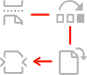

Create, secure & export PDF documents
Create a PDF from Microsoft Office documents, protect the content, and export to other formats

Modify pages & optimize output
Choose exactly how to display a PDF and use the callbacks and annotations APIs to provide programmatic control and enable digital collaboration
Leverage Adobe's cloud-based services
Access the same cloud-based APIs that power Adobe's end user applications to quickly deliver scalable, secure solutions
Key Features of Our PDF Tools API
Use Cases for PDF Embed API
Document Collaboration
Create compelling work-at-home experiences with PDF Embed API:
- Enable real-time team collaboration using comments, highlighting, and drawing tools
- Analyze usage statistics to gain insights into document consumption and interaction patterns
Common use cases: Insurance workflows, publishing applications
Reporting
Use PDF Embed API to generate custom reports:
- Provide consistent, embedded PDF viewing with analytics
- Integrate callbacks to provide event driven chats with helpful tips, information links, and context specific details
Common use cases: Financial reports, real estate transactions
Learn about our PDF Embed API to embed high-fidelity PDFs and control appearance, enable collaboration, and see analytics